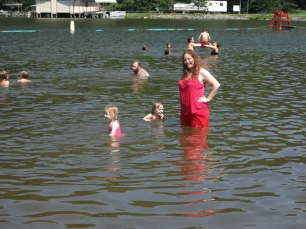
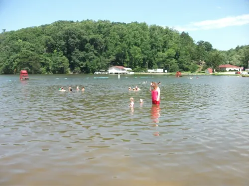
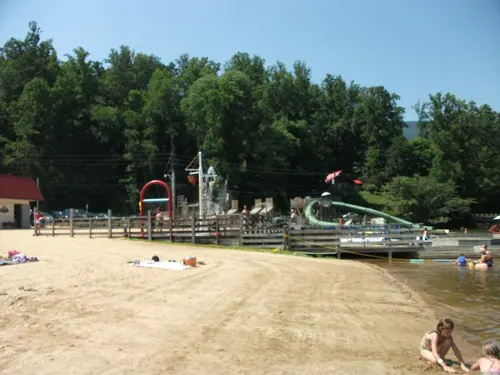
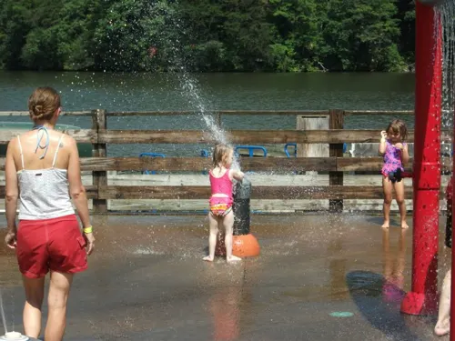
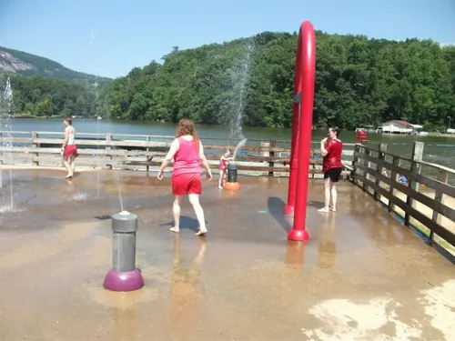
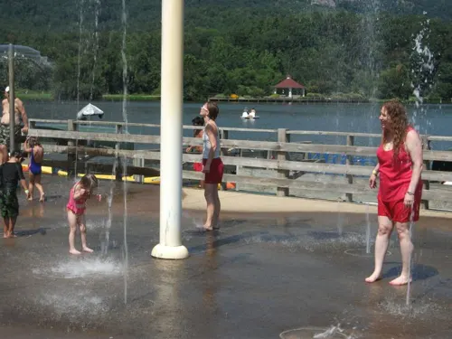

← Travel Journal
Lake Lure, North Carolina
2011

In 2011 we had a great time at Lake Lure — the girls had a great time!
Jessica and Jasmine swam in the lake and played on the public splash pad with the rocky hillside behind the water.

Jessica and Jasmine in the lake with family
Wide view across Lake Lure
Shore and playground by the water
Jessica and Jasmine at the Lake Lure splash padJessica and Jasmine playing at the Lake Lure splash pad
Crossing the splash pad toward the lake
Jessica and Jasmine at the splash-pad water jets